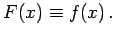

| F(x) =f(x) | (1.30) |
zwischen zwei Funktionen ein und derselben Veränderlichen als Gleichung mit einer Unbekannten bezeichnet, wenn sie nur für bestimmte Werte dieser Veränderlichen richtig ist. Bleibt die Gleichheitsbeziehung für beliebige Werte der Variablen x erhalten, dann nennt man sie eine Identität bzw. man sagt, die Gleichung ist identisch erfüllt, und man schreibt dann 